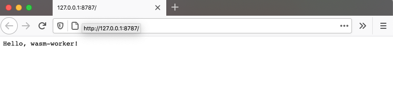
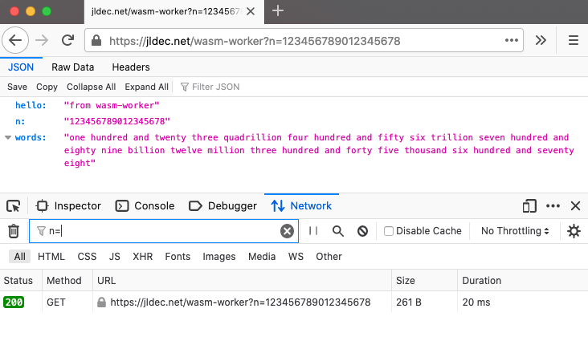

WebAssembly and Rust
From the WebAssembly spec:
WebAssembly (abbreviated wasm) is a safe, portable, low-level code format designed for efficient execution and compact representation.
WebAssembly is the first new runnable format supported by all major browsers. It is also showing promise as a standardized way to deploy code to edge environments.
Rust is a popular language for writing code compiled to WebAssembly. This is not just because of Rust's minimal runtime needs, but also because of its community and tools.
Cloudflare Workers
Cloudflare Workers offers a low-cost, low-latency, serverless platform, making it an ideal complement for statically generated websites. Cloudflare Workers use V8, the same open source JavaScript engine from Google which is used in Node.js and Deno.
The APIs available to Cloudflare Workers are very limited - Unlike Node, there is no module loader and no access to the host platform.
Workers handle requests from the Web,
and they can call other Web services.
While the default JavaScript is already quite efficient, workers can also run WebAssembly.
Creating the worker
This article demonstrates how to build a worker which calls a wasm function written in Rust.
The Cloudflare UI makes it easy to create new workers, but adding WebAssembly requires API calls with wasm Resource Bindings. Since this part of the API is not well documented, using the wrangler CLI is easier.
Install wrangler and authenticate with wrangler login. Then run the following:
$ wrangler generate wasm-worker -t rust
🔧 Creating project called `wasm-worker`...
✨ Done! New project created ./wasm-worker
🕵️ You will need to update the following fields in the created wrangler.toml file before continuing:
🕵️ You can find your account_id in the right sidebar of your account's Workers page, and zone_id in the right sidebar of a zone's overview tab at https://dash.cloudflare.com
- account_id
This creates a directory called wasm-worker populated with files from github.com/cloudflare/rustwasm-worker-template.
wrangler dev
If you set your 'account_id' in wrangler.toml, you can call wrangler dev to build and run the worker. (There is no need to install or run 'wasm-pack' as suggested by the project README.)
$ wrangler dev
🌀 Compiling your project to WebAssembly...
[INFO]: 🎯 Checking for the Wasm target...
[INFO]: 🌀 Compiling to Wasm...
...
Compiling wasm-worker v0.1.0
Finished release [optimized] target(s) in 12.43s
[INFO]: ⬇️ Installing wasm-bindgen...
[INFO]: Optimizing wasm binaries with `wasm-opt`...
[INFO]: Optional fields missing from Cargo.toml: 'description', 'repository', and 'license'. These are not necessary, but recommended
[INFO]: ✨ Done in 13.03s
[INFO]: 📦 Your wasm pkg is ready to publish at wasm-worker/pkg.
💁 watching "./"
👂 Listening on http://127.0.0.1:8787
Now browse to http://127.0.0.1:8787

Modifications
For learning purposes, I pared the code down and pushed it to jldec/wasm-worker.
- Removed unused files:
.appveyor.yml,.travis.yml,.cargo-ok - Removed
worker/metadata_wasm.json- no longer used by wrangler - Removed optional libraries
console_error_panic_hook,wee_alloc, andcfg-if - Updated version of
wasm-bindgen - Filled in
description,license, andrepositoryinCargo.toml - Added
Cargo.lockto.gitignore - Rewrote the README
I added the shortscale crate, and changed src/lib.rs.
use shortscale::shortscale;
#[wasm_bindgen]
pub fn numwords(num: u64) -> String {
return shortscale(num);
}
This is called from the worker.js.
// Return JSON using query param n.
async function handleRequest(request) {
// pick up #[wasm_bindgen] exports from ../src/lib.rs
const { numwords } = wasm_bindgen;
// `wasm` binding name is auto-generated by wrangler
await wasm_bindgen(wasm);
let hello = 'from wasm-worker';
let url = new URL(request.url);
let n = url.searchParams.get('n');
let words;
try {
words = numwords(BigInt(n));
}
catch (e) {
words = 'undefined';
}
return new Response(JSON.stringify({ hello, n, words }),
{
status: 200,
headers: { "Content-Type": "application/json; charset=utf-8" }
}
);
}
wrangler publish
Finally, I added a route and zone ID to my wrangler.toml and called wrangler publish
$ wrangler publish
🌀 Compiling your project to WebAssembly...
[INFO]: 🎯 Checking for the Wasm target...
[INFO]: 🌀 Compiling to Wasm...
Finished release [optimized] target(s) in 0.03s
[INFO]: ⬇️ Installing wasm-bindgen...
[INFO]: Optimizing wasm binaries with `wasm-opt`...
[INFO]: ✨ Done in 0.47s
[INFO]: 📦 Your wasm pkg is ready to publish at wasm-worker/pkg.
✨ Build succeeded
✨ Successfully published your script to
jldec.net/wasm-worker* => stayed the same
https://wasm-worker.jldec.workers.dev
You can run the result at https://jldec.net/wasm-worker?n=123456789012345678 - Round-trip response times in my area average under 30ms.

🦀 Keep 🦀 Digging 🦀
To leave a comment
please visit dev.to/jldec
powered by pub-server and pub-theme-pubblog